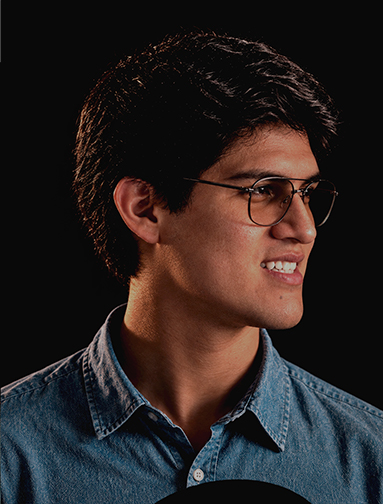

Ingeniero de Software Senior con 6 años de trayectoria coliderando sistemas distribuidos. Especializado en el ecosistema Java Full Stack enfocado en desarrollo web y móvil. Diseño aplicaciones empresariales a gran escala y plataformas transaccionales con un fuerte enfoque en UI/UX. Dominio práctico de arquitecturas modernas (Spring Boot, NestJS, FastAPI) e infraestructura cloud. Trabajo para eliminar fricción técnica, deuda operativa y entregar software altamente mantenible. Optimizo el ciclo de entrega mediante contenedores, cultura DevOps y flujos de IA.
Lidero el desarrollo integral de aplicaciones empresariales full-stack de alto rendimiento. Diseño microservicios avanzados en Java y Python junto a interfaces web modernas e intuitivas. Estructuro la gestión de estado y arquitecturas escalables enfocadas en una óptima UI/UX.
Construí microservicios core para programas de lealtad bajo Clean Architecture y DDD. Automaticé flujos distribuidos y pipelines de despliegue cloud mediante IaC con Terraform. Optimicé el rendimiento y observabilidad en producción sobre ecosistemas de Kubernetes.
Modernicé interfaces web avanzadas optimizando la experiencia de usuario y tiempos de respuesta. Refactoricé flujos críticos de venta e integraciones backend eliminando deudas técnicas complejas. Aseguré la entrega continua implementando pipelines automatizados de control de calidad.
Desarrollé servicios backend clave para la aplicación móvil oficial de ventas comerciales. Diseñé procesamientos asíncronos en la nube para desacoplar de forma segura la carga de documentos. Mejoré el rendimiento de base de datos Oracle y validación de servicios web.
Especializado en llevar aplicaciones empresariales y plataformas transaccionales desde el diseño hasta producción. Combino arquitecturas Backend escalables, experiencias UI/UX intuitivas, despliegue automatizado en contenedores y flujos potenciados con IA
Diseño de ecosistemas de alta disponibilidad bajo Clean Architecture, DDD y patrones Event-Driven. Priorizo la simplicidad estructural, la separación clara de responsabilidades y la observabilidad desde el diseño para construir plataformas resilientes y libres de deuda técnica.
Construcción de APIs REST y servicios transaccionales de alta demanda con Java (Spring Boot, Quarkus), Python (FastAPI) y Node.js (NestJS). Resuelvo procesamiento asíncrono e integración segura con bases de datos SQL, NoSQL y caché distribuido (Redis).
Implementación de aplicaciones web modernas, portales corporativos y paneles administrativos con React (Next.js, Vite) y Angular (TypeScript, RxJS). Estructuro interfaces rápidas con gestión de estado predecible, componentes reutilizables y tiempos de respuesta optimizados.
Automatización de pipelines CI/CD e infraestructura como código (Terraform) en Azure y AWS con Docker y Kubernetes (AKS). Ejecuto tuning de memoria/JVM para reducir latencia y monitoreo continuo en producción mediante Dynatrace, Grafana y ELK.
Implementación de arquitecturas RAG, búsqueda semántica sobre bases vectoriales e integración de LLMs en sistemas empresariales. Diseño flujos agénticos (Agentic Workflows) y pipelines de automatización inteligente enfocados en resolver casos de uso reales en producción.
Construcción de los microservicios core del programa de lealtad y acumulación/canje de puntos del BCP en Java (Quarkus, Spring Boot) bajo Clean Architecture y DDD. Ejecución de tuning de memoria/JVM en AKS, estrategias de caché y monitoreo en producción con Dynatrace, Grafana y ELK.
Desarrollo del flujo CI/CD de despliegue automatizado dentro del equipo de DevSecOps del BCP. Integración de pipelines en Jenkins, aprovisionamiento de infraestructura como código en Azure con Terraform y automatizaciones operativas (Jira) en Python y Node.js mediante Azure Functions.
Refactorización de flujos críticos de emisión y venta digital sobre Liferay y Spring MVC, junto con interfaces para gestión de carteras de corredores en React, TypeScript y Redux Toolkit. Automatización de entrega continua con Jenkins, JFrog Artifactory y control de calidad en SonarQube.
Desarrollo de servicios backend en Java (Spring Boot) para la app móvil de fuerza de ventas, integrando validación biométrica en el alta de vendedores y registro de comercios. Implementación de procesamiento asíncrono en AWS (S3, SQS) con Node.js y optimización de consultas en Oracle.